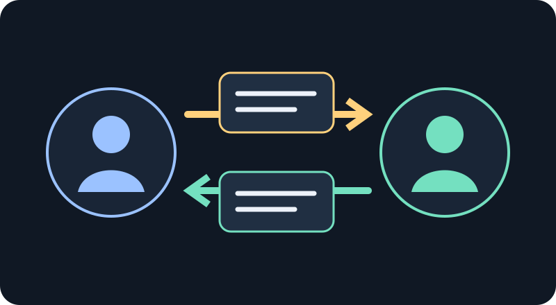
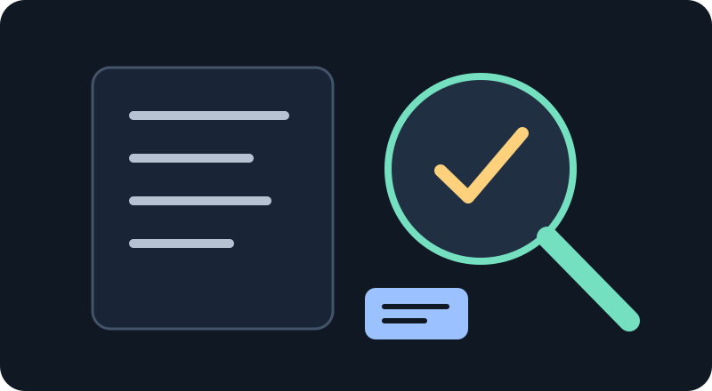

축 1 · 역할과 책임
요청을 맡기고,
결과를 다시 받는 법
지휘 에이전트(오케스트레이터)는 무엇을 할지와 경계를 정합니다. 작업 에이전트(워커)는 그 범위에서 실행합니다. 요청과 응답을 파일로 연결하면 실패와 재시도도 구분해 이어갈 수 있습니다.
- 사람의 요청
- 지휘 에이전트 · 계획하고 요청서 작성
- 작업 에이전트 · 맡은 범위 수행
- 작업 흐름 · 조사 → 계획 → 승인 → 실행 → 검증
- 필요한 지식 참조
- 산출물 만들기 (예: 이미지)
- 실제 산출물 검증
- 결과 보고
- 사람에게 전달
이 강의의 식별자와 파일명은 모두 교육용 합성 데이터입니다.
→
→
지휘 에이전트가 판단을 위임하더라도 완료를 확인할 책임까지 넘기는 것은 아닙니다.
1 · 문제 장면
대화가 끊기거나 실행이 실패하면 무엇으로 다시 이어갈까요?
어떤 작업을 맡겼는지, 허용한 범위가 무엇인지, 어디까지 끝났는지가 대화에만 남아 있으면 새 시도에서 맥락을 복원하기 어렵습니다. 요청과 응답을 각각 읽을 수 있는 파일로 남기면 실행자와 확인자가 같은 약속을 볼 수 있습니다.
부탁이 모호해짐
목표만 있고 입력이나 완료 기준이 없으면 작업 에이전트가 임의로 범위를 채우게 됩니다.
시도끼리 섞임
실패한 요청과 수정한 요청을 같은 이름으로 부르면 어느 응답이 어느 입력의 결과인지 알기 어렵습니다.
보고만 남음
완료 메시지만 받고 파일을 읽지 않으면 실제 결과를 확인하지 못합니다.
2 · 큰 그림
세 역할과 두 파일이 책임의 경계를 만듭니다

요청 작성자무엇을 · 왜 · 어디까지요청 파일 작성
요청
inbox/attempt-002.md목표 · 입력 · 완료 조건 · 제한작업 에이전트확인하고 허용 범위에서 실행응답 파일 작성
응답
outbox/attempt-002-response.md같은 ID · 상태 · 산출물 · 오류결과 확인자읽고 조건과 대조완료 여부 판단
요청 파일은 “무엇을 해야 하나”를, 응답 파일은 “무슨 일이 있었나”를 기록합니다. 파일 통신은 메시지가 오가는 방식의 한 예이며, 이 강의는 네트워크 전달이나 분산 잠금 기능을 약속하지 않습니다.
3 · 핵심 개념
목표와 요청 식별자는 서로 다른 것을 가리킵니다
오래 이어지는 목적
“무엇을 이루려는가?”를 가리킵니다. 같은 목적을 여러 번 시도하면 유지할 수 있습니다.
goal-42
한 번의 불변 시도
“이번에 보낸 요청은 무엇인가?”를 가리킵니다. 바뀐 요청이나 재시도에는 새 ID를 씁니다.
attempt-001 → attempt-002
한 번 제출한 요청을 몰래 고치지 않습니다. 바뀐 입력과 의도는 새 요청 ID로 구분합니다.
4 · 요청부터 응답까지
파일을 따라가면 누가 무엇을 했는지 보입니다

- 작성요청 작성자가 목표, 입력, 완료 조건, 승인 경계를 적습니다.
- 접수요청 파일은 지정된 받은 편지함(inbox)에 놓입니다.
- 확인작업 에이전트는 요청 ID, 파일 경로, 허용 범위를 먼저 확인합니다.
- 실행확인된 입력으로 작업하고 가능한 산출물을 보존합니다.
- 기록같은 요청 ID와 terminal 상태, 산출물 또는 실패 이유를 응답 파일에 씁니다.
- 대조확인자는 요청 ID가 맞는지, 완료 조건과 실제 파일이 맞는지 읽어 확인합니다.
예를 들어 작업 에이전트가 “완료”라고 답했더라도 응답의 ID를 요청서와 대조하고 산출물 파일을 열어야 합니다. 파일이 없거나 내용이 조건에 못 미치면 완료로 받아들이지 않습니다.
5 · 실패와 부분 성공
상태는 문제를 숨기지 않고 다음 행동을 알려줍니다
필수 완료 조건을 충족하고 산출물을 남겼습니다. 그래도 확인자는 실물을 읽습니다.
일부 산출물이 있습니다. 가능한 결과는 보존하고 남은 작업과 검증 미완료를 적습니다.
실행했지만 완료하지 못했습니다. 실제 원인과 확보된 결과를 분리해 기록합니다.
필수 조건이나 안전 경계가 해결되지 않아 시작 또는 진행할 수 없습니다.
같은 목표를 다시 시도할 때는 새 요청 ID를 발급합니다. 이전 응답을 덮어쓰지 않아야 어떤 입력에서 어떤 결과가 나왔는지 추적할 수 있습니다.
6 · 작은 합성 사례
첫 요청의 입력 누락을 발견하고 새 요청으로 고칩니다
교육용 포스터 초안을 만든다
attempt-001입력 파일 없음실패 · 이유 기록
attempt-002교육용 합성 brief 포함완료 · 결과 대조
두 번째 시도는 같은 목표에 연결되지만 요청 내용과 식별자는 새롭습니다. 첫 응답은 그대로 보존하고, 두 번째 결과가 요구 조건과 맞는지 따로 확인합니다.
합성 데이터: goal-42, attempt-001, attempt-002, 교육용 포스터. 실제 개인이나 작업 기록을 사용하지 않았습니다.
7 · 실행 예고
이 원리는 로컬 파일을 다루는 작은 Python 예제로 확인할 수 있습니다
요청 일부
{
"request_id": "attempt-002",
"goal_id": "goal-42",
"inputs": ["brief.txt"],
"acceptance": "응답과 초안 파일 확인"
}응답 일부
{
"request_id": "attempt-002",
"status": "done",
"artifacts": ["draft.txt"]
}다음 실습은 임시 디렉터리의 합성 입력만 사용합니다. 설치 방법과 지원 환경은 위키에서 확인하고, 예제가 실서비스로 메시지를 보내거나 실제 홈 디렉터리를 수정한다고 가정하지 않습니다.
8 · 요약과 다음 단계
요청과 응답을 연결하고, 마지막에는 사람이 실물을 확인합니다
- 지휘 역할은 목표·완료 조건·경계를 정하고 위임합니다.
- 작업 에이전트는 확인된 범위에서 실행하고 결과와 상태를 남깁니다.
- 목표는 이어질 수 있지만, 바뀐 시도에는 새 요청 ID가 필요합니다.
- 완료 보고만 믿지 않고 ID, 상태, 산출물 내용을 대조합니다.
다음 질문승인과 검토를 여러 단계로 나누면 어떤 실수를 막을 수 있을까요?미리보기 목차로 돌아가기 →